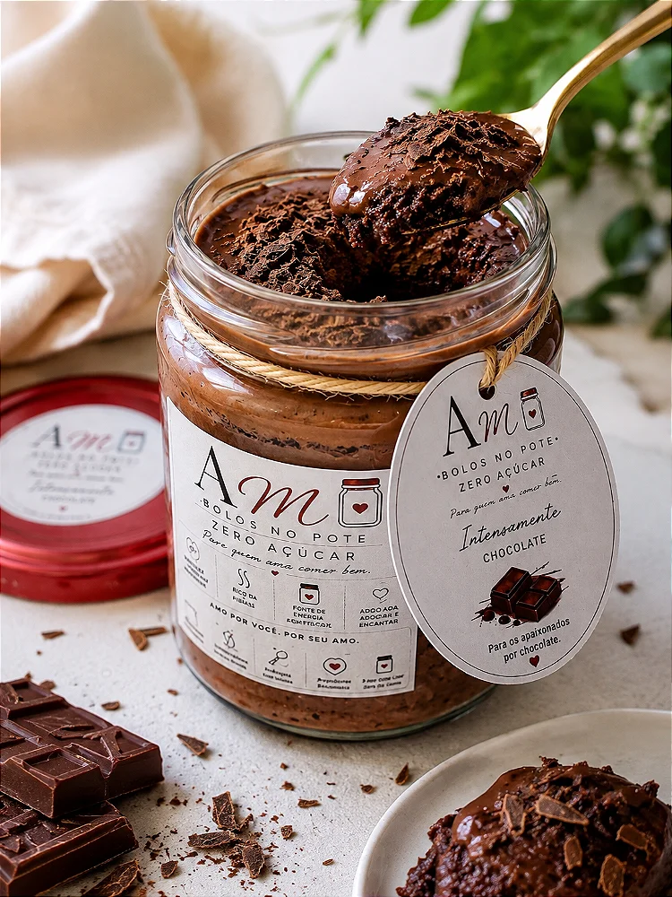
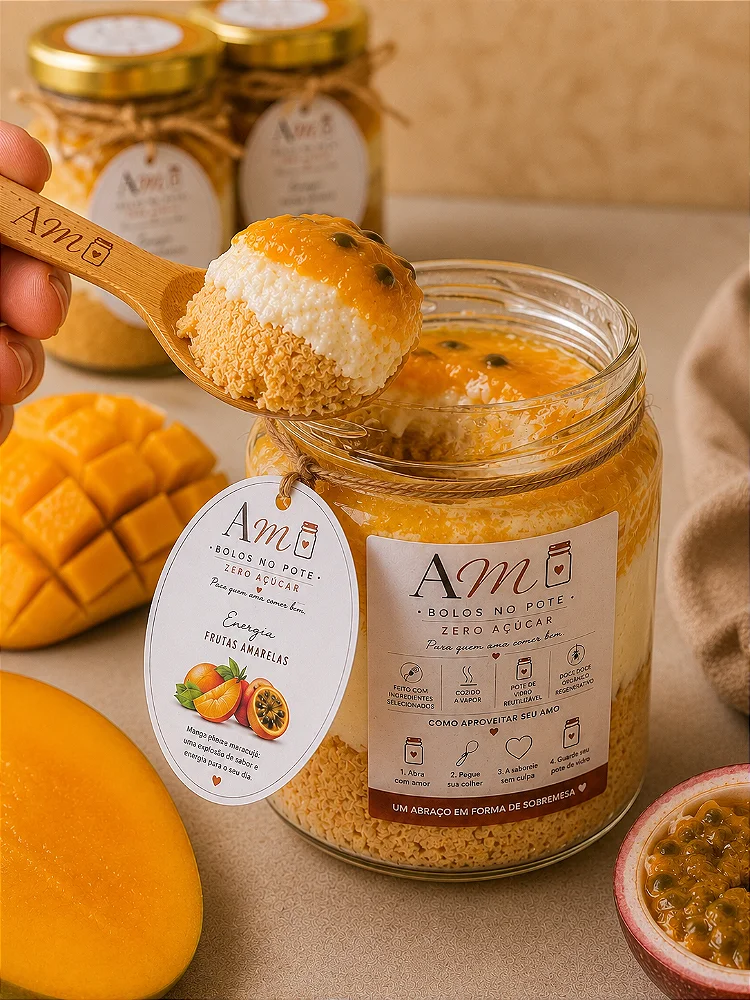
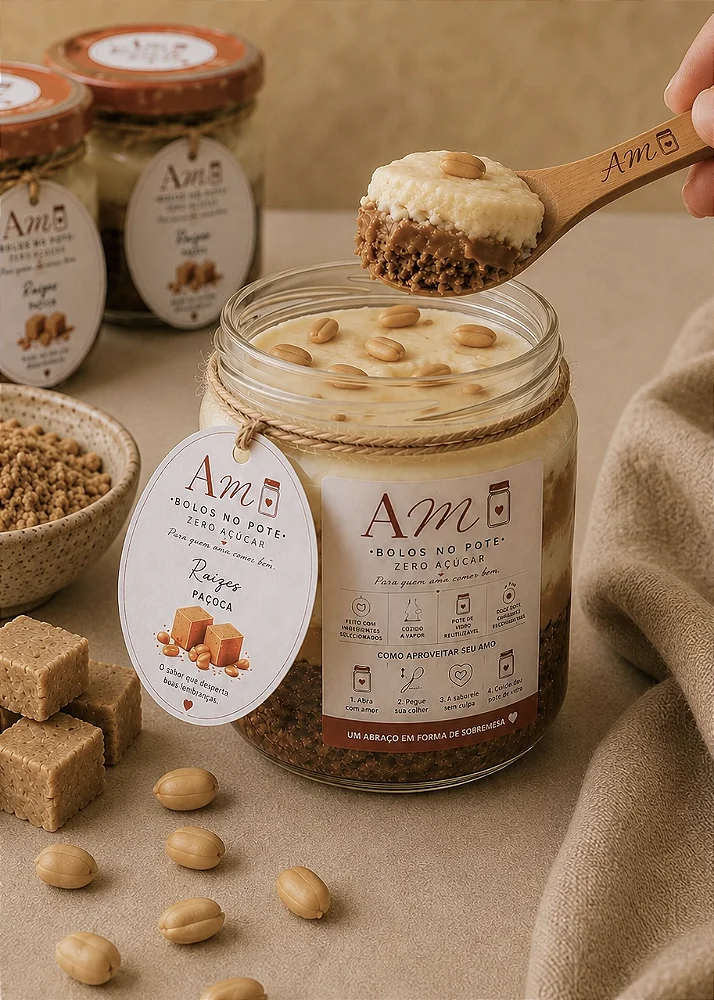
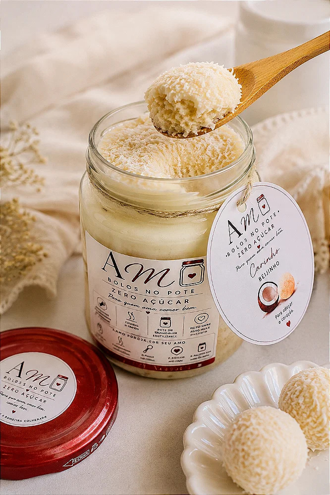

Para quem ama comer bem.
Zero açúcar
Bolos no pote zero açúcar, feitos à mão e cozidos a vapor. O rótulo diz o que tem e o que não tem.



Escolha pelo sabor



Hoje o dia pedechocolate.
ChocolateFrutaCocoUm clássico
O que é saudável aqui está no rótulo.
Cada linha tem a sua regra, e os selos dizem o que tem e o que não tem.
Um abraço em forma de sobremesa
Zero açúcar
Fonte de fibras
Comer bem não devia cobrar nada depois
Receita conhecida em versão saudável: artesanal, cozida a vapor, em pote de vidro reutilizável.
